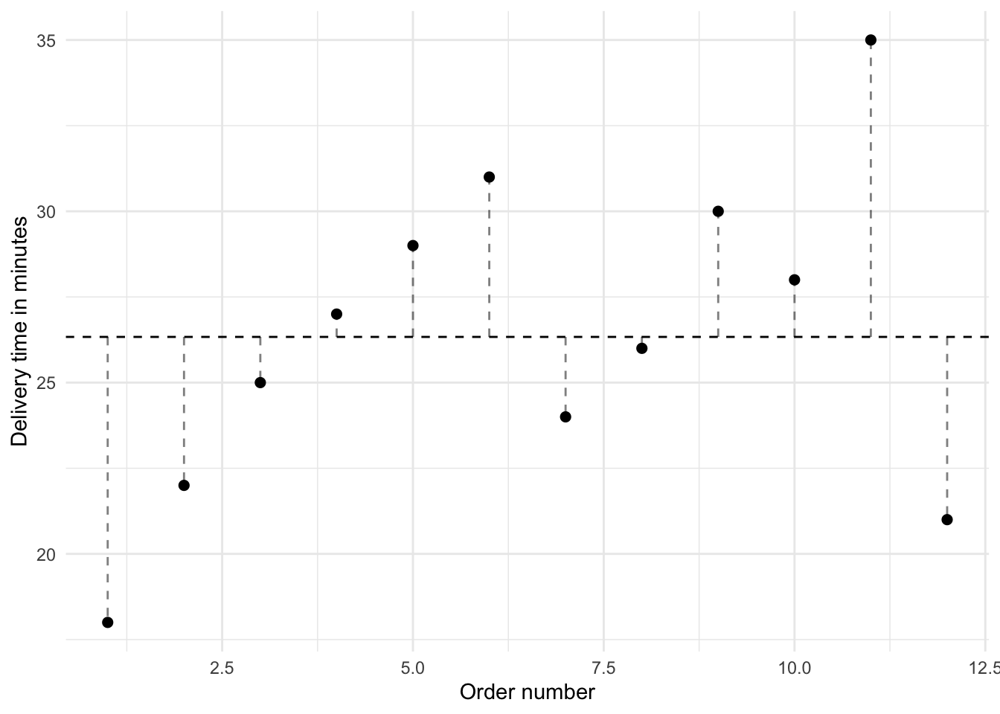
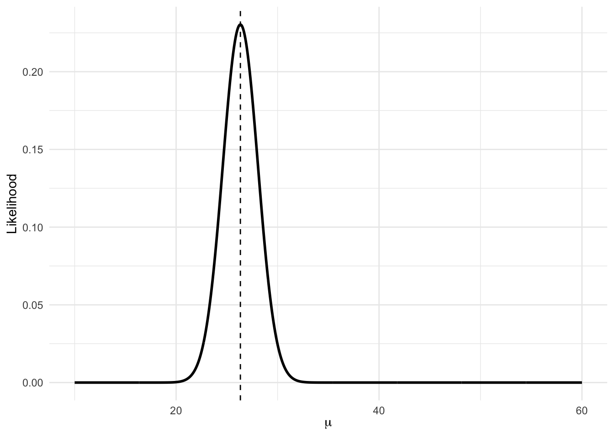
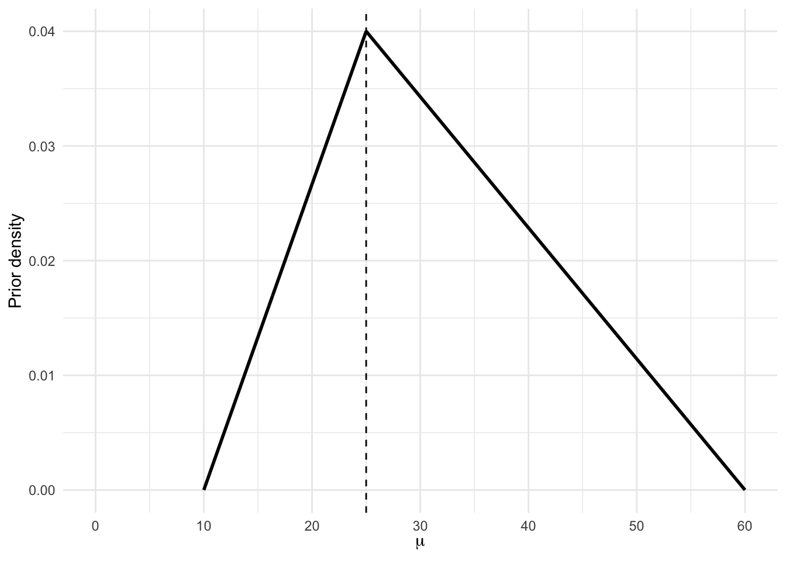
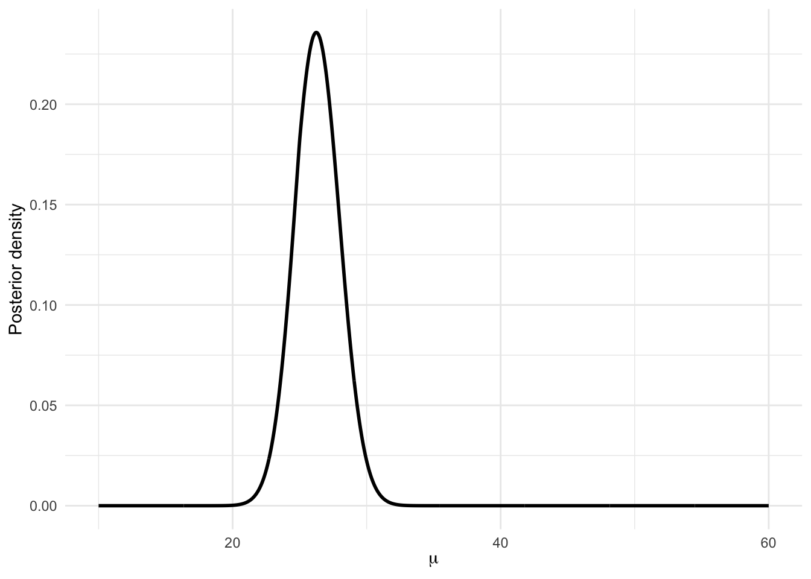
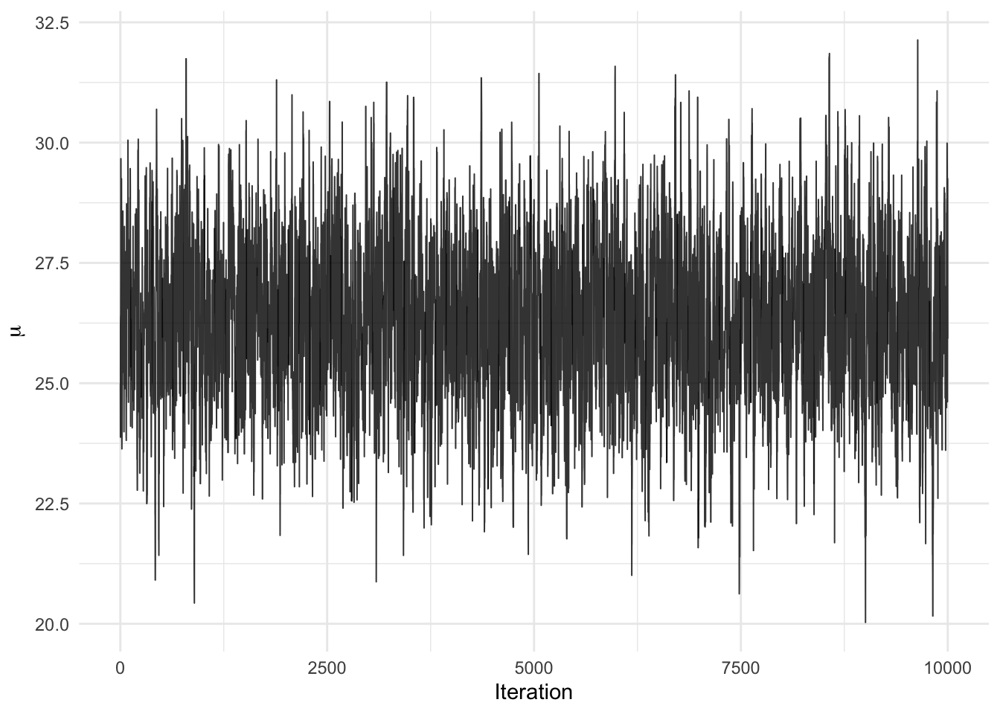
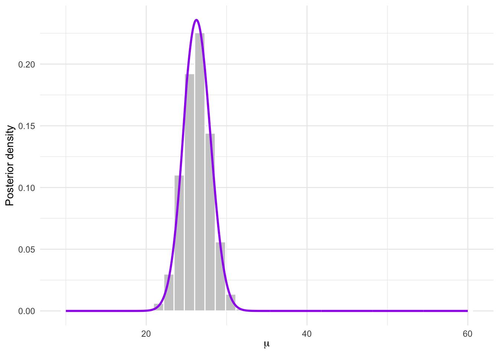
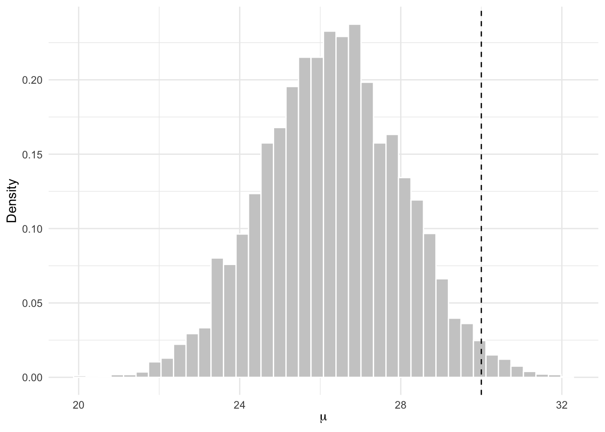

| Order | Delivery time (mins) |
|---|---|
| 1 | 18 |
| 2 | 22 |
| 3 | 25 |
| 4 | 27 |
| 5 | 29 |
| 6 | 31 |
| 7 | 24 |
| 8 | 26 |
| 9 | 30 |
| 10 | 28 |
| 11 | 35 |
| 12 | 21 |
A simple example where MCMC is useful: estimating delivery time
Recap
So far, we have seen Bayesian examples where the posterior could be written down exactly. For example, when we combined a beta prior with binomial data, the posterior was also beta. This is called a conjugate model. However, not every Bayesian model works this neatly. Sometimes the prior is easy to describe in words but does not combine with the likelihood to produce a simple named posterior distribution.
INSERT SIMPLE CONJUGATE EXAMPLE HERE
The scenario
Suppose a student food delivery service claims that its average delivery time is about 25 minutes. In this example, we will estimate the average delivery time for this service.
\[\begin{aligned} \text{Let } \mu &= \text{the average delivery time in minutes}. \end{aligned}\]
Our goal is to learn about \(\mu\) using a small amount of data and some prior information. Suppose we collect delivery times for 12 recent orders:
Here, the sample mean is:
\[\begin{aligned} \bar{x} &= \text{the average delivery time in our sample} \\ &= 26.33 \end{aligned}\]
For this example, we will assume that the population standard deviation is known: \(\sigma = 6\). This keeps the example simple because we only need to estimate one unknown parameter: \(\mu\). In real applications, we might also estimate \(\sigma\). However, that would give us two unknown parameters instead of one.
Plotting the raw data
Before building the model, it is useful to look at the observed delivery times.

The horizontal dashed line shows the sample mean. This is the average delivery time in the sample (26.33), but it is not necessarily the true average delivery time for all deliveries. Because we only observed 12 orders, there is still uncertainty about \(\mu\). The vertical dashed lines represent the deviations from each observation to the sample mean.
The likelihood
We now need to decide what statistical model to use for the data. The individual delivery times may not be perfectly normally distributed. Some deliveries may be unusually fast, and some may be unusually slow. However, when we take an average over several deliveries, the sample mean tends to behave more regularly. By the Central Limit Theorem, the sampling distribution of the sample mean is often approximately normal, especially when the sample size is not extremely small and the data are not wildly irregular.
For that reason, we will use a normal model for the sample mean.
\[\begin{aligned} \bar{x} \mid \mu &\sim N\left(\mu, \frac{\sigma^2}{n}\right) \end{aligned}\]
This says that the sample mean \(\bar{x}\) is likely to be close to the true mean \(\mu\), but not exactly equal to it. As we have seen in previous chapters, the standard deviation of the sample mean is called the standard error:
\[\begin{aligned} \text{standard error} &= \frac{\sigma}{\sqrt{n}} \end{aligned}\]
So our likelihood is:
\[\begin{aligned} \bar{x} \mid \mu &\sim N\left(\mu, \frac{6}{\sqrt{12}}\right) \end{aligned}\]
Equivalently, we can write:
\[\begin{aligned} \bar{x} \mid \mu &\sim N\left(\mu, 1.73^2\right) \end{aligned}\]
The likelihood asks:
If a particular value of \(\mu\) were true, how likely would it be to observe the sample mean we observed?
We can plot the likelihood over a range of possible values for \(\mu\):

The likelihood is highest near the sample mean. This makes sense: values of \(\mu\) close to the observed sample mean make the data more likely.
The prior
Now we need a prior for \(\mu\). A normal prior would be mathematically convenient. However, suppose we want a prior that is easy to describe in plain language.
Suppose we know the following: (1) the earliest the food can be delivered is 10mins (factoring packing and driving time) and (2) cannot be more than 60 minutes, or else the customer doesn’t have to pay. Therefore, before we see the data, we might have the following beliefs:
| Quantity | Value | Meaning |
|---|---|---|
| Minimum plausible average | 10 minutes | It would be surprising if the true average were below this |
| Most plausible average | 25 minutes | This is the delivery service’s claim |
| Maximum plausible average | 60 minutes | It would be surprising if the true average were above this |
This suggests a triangular prior. A triangular prior is defined using three values:
\[\begin{aligned} a &= \text{minimum plausible value} \\ m &= \text{most plausible value} \\ b &= \text{maximum plausible value}. \end{aligned}\]
For this example:
\[\begin{aligned} a &= 10 \\ m &= 25 \\ b &= 60 \end{aligned}\]
The prior density increases from 10 to 25, then decreases from 25 to 60. Visually:

The prior peaks at 25 minutes. This means that before seeing the data, we thought values near 25 minutes were most plausible. Values near 10 or 60 minutes were possible, but less plausible.
CautionWhy this is not a conjugate model
In the beta-binomial example, the prior and posterior were from the same family:
\[\begin{aligned} \text{Beta prior} + \text{Binomial likelihood} &\rightarrow \text{Beta posterior} \end{aligned}\]
That made the posterior easy to write down.
Now, we have:
\[\begin{aligned} \text{Triangular prior} + \text{Normal likelihood} &\rightarrow \text{posterior} \end{aligned}\]
The posterior exists, but it is not a standard distribution with a simple name. That means we cannot simply write something like:
\[\begin{aligned} \mu \mid \bar{x} &\sim \text{some known distribution} \end{aligned}\]
Instead, we use the general Bayesian rule:
\[\begin{aligned} p(\mu \mid \bar{x}) &\propto p(\bar{x} \mid \mu)p(\mu) \end{aligned}\]
Or in words:
\[\begin{aligned} \text{posterior} &\propto \text{likelihood} \times \text{prior} \end{aligned}\]
This is the target distribution we want to approximate.
Calculating the posterior on a grid
We now have two ingredients:
- a prior, which describes what values of \(\mu\) seemed plausible before seeing the data
- a likelihood, which describes which values of \(\mu\) are supported by the observed sample mean
The next step is to combine them to form a posterior.
Before using MCMC, we will do this in a more direct way using a grid. A grid is just a list of possible values. In this example, we make a long list of possible values for the true mean delivery time \(\mu\). For each value of \(\mu\) in the grid, we calculate:
- the prior density at that value
- the likelihood at that value
- the product of the prior and likelihood
This gives us an approximate posterior distribution. This is a simple method that works well here because we only have one unknown parameter, \(\mu\). It is useful because it lets us see clearly what the posterior should look like before we move to a more general computational method.
First, we will create the grid of possible values for \(\mu\). In this example, \(\mu\) represents the true average delivery time. Since the delivery times are measured in minutes, we need to choose a reasonable range of possible values. Here, we will consider values of \(\mu\) from 10 minutes to 60 minutes. The argument length.out = 1000 means that R will create 1000 evenly spaced values between 10 and 60.
mu_grid <- seq(10, 60, length.out = 1000)Next, we calculate the width of each small interval in the grid. Because mu_grid is made up of evenly spaced values, the distance between the first value and the second value tells us the spacing for the whole grid. This value is small because we used 1000 grid points. We will use grid_width later when we convert densities into approximate probabilities. The idea is that each grid point represents a small interval of possible values for \(\mu\). The width of that interval is approximately grid_width.
grid_width <- mu_grid[2] - mu_grid[1]Next, we can create the table that stores the prior, likelihood, and posterior calculations for each grid value. The column mu contains the grid values. The column prior gives the prior density at each value of \(\mu\). The column likelihood gives the likelihood at each value of \(\mu\). This tells us how plausible the observed sample mean would be if that grid value were the true mean. The column unnormalised_posterior multiplies the prior and likelihood together. This gives us the shape of the posterior distribution, but it is not yet scaled so that the total area under the curve equals 1.
posterior_grid <- tibble(
mu = mu_grid,
prior = triangular_density(mu),
likelihood = dnorm(x_bar, mean = mu, sd = standard_error),
unnormalised_posterior = prior * likelihood
)Next, we rescale the unnormalised posterior so that it becomes a proper posterior density. At the moment, unnormalised_posterior has the right shape, but the total area under it is not necessarily equal to 1. A probability density needs to have total area 1, so we need to rescale it. The final column, posterior_probability, gives the approximate posterior probability attached to each small interval in the grid. This is found by multiplying the posterior density by the grid width.
posterior_grid <- posterior_grid |>
mutate(
posterior_density = unnormalised_posterior /
sum(unnormalised_posterior * grid_width),
posterior_probability = posterior_density * grid_width
)Let’s now plot the posterior density:
ggplot(posterior_grid, aes(x = mu, y = posterior_density)) +
geom_line(linewidth = 1) +
labs(
x = expression(mu),
y = "Posterior density"
) +
theme_minimal()
Summarising the posterior
The posterior plot gives us the full shape of the posterior distribution. However, we often also want to summarise the posterior using a few numbers. Two useful summaries are:
- the posterior mean
- a 95% credible interval
The posterior mean gives a single summary value for \(\mu\). The 95% credible interval gives a range of plausible values for \(\mu\) after combining the prior with the data. Because we calculated the posterior on a grid, we can calculate these summaries by adding up the posterior probabilities across the grid.
Posterior mean
The posterior mean is a weighted average of the possible values of \(\mu\). Each grid value is weighted by its posterior probability. Values of \(\mu\) with higher posterior probability contribute more to the posterior mean.
posterior_mean <- posterior_grid |>
summarise(
posterior_mean = sum(mu * posterior_probability)
)
posterior_mean# A tibble: 1 × 1
posterior_mean
<dbl>
1 26.395% credible interval
Next, we calculate a 95% credible interval. A 95% credible interval is an interval that contains 95% of the posterior probability. To calculate this from the grid, we first calculate the cumulative posterior probability. This tells us how much posterior probability has accumulated as we move from smaller to larger values of \(\mu\).
posterior_grid <- posterior_grid |>
mutate(
cumulative_probability = cumsum(posterior_probability)
)The lower endpoint of the interval is the value of \(\mu\) where the cumulative probability first reaches 2.5%. The upper endpoint is the value of \(\mu\) where the cumulative probability first reaches 97.5%.
credible_interval <- posterior_grid |>
summarise(
lower = min(mu[cumulative_probability >= 0.025]),
upper = min(mu[cumulative_probability >= 0.975])
)
credible_interval# A tibble: 1 × 2
lower upper
<dbl> <dbl>
1 23.0 29.7This interval is called an equal-tailed credible interval because it leaves 2.5% of the posterior probability in the lower tail and 2.5% in the upper tail.
In words, we can say:
Based on the prior and the observed data, there is a 95% posterior probability that the true average delivery time \(\mu\) lies between 23.0 minutes and 29.7 minutes.
Markov Chain Monte Carlo (MCMC)
The grid method is useful because it makes the posterior calculation very explicit. We created many possible values of \(\mu\), calculated the prior and likelihood at each value, multiplied them together, and then rescaled the result to get a posterior distribution. This works well in this example because we only have one unknown parameter: the true average delivery time \(\mu\).
However, grid methods become difficult when models become more complicated. For example, suppose we had several unknown parameters instead of one. We might want to estimate:
- the true mean delivery time
- the standard deviation of delivery times
- the effect of day of the week
- the effect of distance
- the effect of order size
If we tried to create a grid for all of these unknown quantities at once, the number of combinations would grow very quickly.
Note
For example, suppose we used 1000 grid points for each unknown quantity. With one unknown parameter, we need:
\[ 1000 \text{ grid points} \]
With two unknown parameters, we need:
\[ 1000 \times 1000 = 1{,}000{,}000 \text{ grid combinations} \]
With five unknown parameters, we need:
\[ 1000^5 = 1{,}000{,}000{,}000{,}000{,}000 \text{ grid combinations} \]
So the problem grows very quickly. This is sometimes called the curse of dimensionality. Even though a grid is easy to understand, it becomes impractical once we have several unknown parameters.
Understanding MCMC in three parts
The phrase Markov Chain Monte Carlo can sound intimidating, but the name contains the three ideas we need:
| Part | Meaning | In this example |
|---|---|---|
| Monte Carlo | Use random simulation | Draw possible values of \(\mu\) |
| Markov chain | Each step depends on the current value | Propose the next \(\mu\) near the current \(\mu\) |
| Metropolis-Hastings | Decide whether to accept or reject a proposal | Move toward values with more posterior support, while sometimes accepting worse values |
A useful way to remember the pieces is:
Monte Carlo proposes. The Markov chain remembers where it is. Metropolis-Hastings decides whether to move.
Part 1: Monte Carlo
The Monte Carlo part simply means that we use random simulation. Instead of calculating everything exactly, we generate random values and use them to approximate a distribution. In this example, a simulated value such as:
\[ \begin{aligned} \mu &= 28.4 \end{aligned} \]
means that one possible value of the true average delivery time is 28.4 minutes.
The app above is not doing Bayesian inference yet. It is only showing the simulation idea. We generate possible values, then use those simulated values to learn about a distribution.
Part 2: Markov chain
The Markov chain part means that the next value depends on the current value. Suppose the current value is \(\mu_{t-1}\). A simple way to propose the next value is:
\[ \begin{aligned} \mu^\star &\sim N(\mu_{t-1}, s^2) \end{aligned} \]
where \(s\) controls how large the proposed jumps tend to be.
For example, if the current value is 26 minutes, the next proposal might be 27.1 minutes or 24.8 minutes. It is usually nearby, because the proposal distribution is centred on the current value.
Notice in the app above that the chain can wander randomly, moving quite far away from the proposed distribution. This is sometimes refered to as a random walk.
Part 3: Metropolis-Hastings
The Metropolis-Hastings part adds the accept/reject rule.
We do not want to wander randomly forever. We want the chain to spend more time in values of \(\mu\) with high posterior density and less time in values with low posterior density.
So at each step we compare:
- the posterior target at the proposed value, \(\mu^\star\)
- the posterior target at the current value, \(\mu_{t-1}\)
The ratio is:
\[ \begin{aligned} r &= \frac{p(\bar{x} \mid \mu^\star)p(\mu^\star)} {p(\bar{x} \mid \mu_{t-1})p(\mu_{t-1})} \end{aligned} \]
Then the acceptance probability is:
\[ \begin{aligned} \alpha &= \min(1,r) \end{aligned} \]
This gives the following rule:
| Situation | Meaning | Decision |
|---|---|---|
| \(r > 1\) | The proposed value has higher posterior support | Accept it |
| \(r < 1\) | The proposed value has lower posterior support | Accept it with probability \(r\) |
| Proposal rejected | The proposed value is not stored | Store the current value again |
This last point is important. If a proposal is rejected, the chain does not disappear. It records the previous value again.
NoteWhy accept worse values sometimes?
If the algorithm only accepted better values, it would climb to the top of the posterior and get stuck there.
Accepting worse values sometimes allows the chain to move around and represent the whole posterior distribution, not just the single most likely value.
Writing the posterior target in R
To run the algorithm, we first need a function for the unnormalised posterior. This is the target distribution for MCMC.
\[ \begin{aligned} p(\mu \mid \bar{x}) &\propto p(\bar{x} \mid \mu)p(\mu) \end{aligned} \]
In R, this is:
posterior_target <- function(mu) {
prior <- triangular_density(mu)
likelihood <- dnorm(x_bar, mean = mu, sd = standard_error)
prior * likelihood
}This function gives the prior times the likelihood. It does not calculate the normalising constant. That is okay because the normalising constant cancels out in the Metropolis-Hastings ratio.
Running the Metropolis-Hastings algorithm
Now we can write the algorithm.
set.seed(123)
n_iter <- 10000
proposal_sd <- 2
mu_chain <- numeric(n_iter)
mu_chain[1] <- 25
accepted <- logical(n_iter)
for (t in 2:n_iter) {
current_mu <- mu_chain[t - 1]
proposed_mu <- rnorm(
n = 1,
mean = current_mu,
sd = proposal_sd
)
current_density <- posterior_target(current_mu)
proposed_density <- posterior_target(proposed_mu)
r <- proposed_density / current_density
alpha <- min(1, r)
u <- runif(1)
if (u < alpha) {
mu_chain[t] <- proposed_mu
accepted[t] <- TRUE
} else {
mu_chain[t] <- current_mu
accepted[t] <- FALSE
}
}
mcmc_df <- tibble(
iteration = 1:n_iter,
mu = mu_chain,
accepted = accepted
)The object mu_chain contains the MCMC sample. Each value is one possible value of \(\mu\).
Looking at the first few iterations
It is useful to inspect the first few values in the chain.
mcmc_df |>
slice(1:10) |>
gt() |>
cols_label(
iteration = "Iteration",
mu = "Value of mu",
accepted = "Accepted?"
) |>
fmt_number(
columns = mu,
decimals = 2
) |>
cols_align(
align = "center",
columns = everything()
)| Iteration | Value of mu | Accepted? |
|---|---|---|
| 1 | 25.00 | FALSE |
| 2 | 23.88 | TRUE |
| 3 | 26.26 | TRUE |
| 4 | 26.40 | TRUE |
| 5 | 26.18 | TRUE |
| 6 | 27.10 | TRUE |
| 7 | 29.67 | TRUE |
| 8 | 28.77 | TRUE |
| 9 | 28.77 | FALSE |
| 10 | 28.77 | FALSE |
Some values may repeat. This happens when a proposal is rejected and the previous value is stored again.
Acceptance rate
The acceptance rate is the proportion of proposed moves that were accepted.
acceptance_rate <- mean(accepted[-1])
acceptance_rate[1] 0.6613661If the acceptance rate is very low, the proposal jumps may be too large. The chain proposes values far away from the current value, and many of them are rejected.
If the acceptance rate is very high, the proposal jumps may be too small. The chain accepts most proposals, but it may move around the posterior very slowly.
For this example, we are using MCMC for teaching, so we do not need to tune the proposal perfectly.
Trace plot
A trace plot shows the value of \(\mu\) at each iteration.
ggplot(mcmc_df, aes(x = iteration, y = mu)) +
geom_line(linewidth = 0.35, alpha = 0.8) +
labs(
x = "Iteration",
y = expression(mu)
) +
theme_minimal()
The trace should move around the high posterior region. It should not drift endlessly upward or downward, and it should not get stuck at one value for a long time.
Burn-in
The beginning of the chain can be influenced by the starting value. It is common to discard some early draws. This is called burn-in.
burn_in <- 1000
mcmc_post_burn <- mcmc_df |>
filter(iteration > burn_in)
NoteWhat is burn-in?
Burn-in is the early part of the chain that we remove before summarising the posterior.
The idea is that the chain may need some time to move from its starting value into the main region of the posterior distribution.
MCMC posterior draws
After removing burn-in, we can plot the remaining MCMC draws.
ggplot(mcmc_post_burn, aes(x = mu)) +
geom_histogram(
aes(y = after_stat(density)),
bins = 40,
fill = "grey80",
color = "white"
) +
labs(
x = expression(mu),
y = "Density"
) +
theme_minimal()
This histogram is an approximation to the posterior distribution. The tallest part of the histogram shows the most plausible values of the average delivery time after combining the prior and the data.
Comparing MCMC with the grid posterior
Because this example has only one unknown parameter, we can compare the MCMC result to the grid approximation from earlier.
ggplot() +
geom_histogram(
data = mcmc_post_burn,
aes(x = mu, y = after_stat(density)),
bins = 40,
fill = "grey80",
color = "white"
) +
geom_line(
data = posterior_grid,
aes(x = mu, y = posterior_density),
linewidth = 1,
color = "purple"
) +
labs(
x = expression(mu),
y = "Posterior density"
) +
theme_minimal()
The grey histogram comes from MCMC. The purple curve comes from the grid approximation. If the algorithm is working well, the histogram should roughly follow the purple curve.
This comparison is useful because the grid result acts like an answer key. In more complicated models, we may not have such a simple grid approximation available.
Summarising the MCMC posterior
Once we have posterior draws, we can summarise them just like any other simulated distribution.
mcmc_summary <- mcmc_post_burn |>
summarise(
posterior_mean = mean(mu),
posterior_median = median(mu),
lower_95 = quantile(mu, 0.025),
upper_95 = quantile(mu, 0.975)
)
mcmc_summary |>
gt() |>
cols_label(
posterior_mean = "Posterior mean",
posterior_median = "Posterior median",
lower_95 = "Lower 95%",
upper_95 = "Upper 95%"
) |>
fmt_number(
columns = everything(),
decimals = 2
) |>
cols_align(
align = "center",
columns = everything()
)| Posterior mean | Posterior median | Lower 95% | Upper 95% |
|---|---|---|---|
| 26.30 | 26.31 | 22.93 | 29.67 |
The posterior mean gives a single-number estimate of the average delivery time. The 95% credible interval gives a range of plausible values for \(\mu\) after combining the prior with the data.
A posterior probability statement
One advantage of Bayesian inference is that we can answer probability questions directly.
For example, suppose the delivery service wants to know whether the true average delivery time is likely to be under 30 minutes.
We want:
\[ \begin{aligned} P(\mu < 30 \mid \bar{x}) \end{aligned} \]
Using MCMC, this is just the proportion of posterior draws below 30.
mcmc_post_burn |>
summarise(
probability_under_30 = mean(mu < 30)
) |>
gt() |>
cols_label(
probability_under_30 = "Posterior probability that mu is below 30"
) |>
fmt_number(
columns = probability_under_30,
decimals = 3
) |>
cols_align(
align = "center",
columns = everything()
)| Posterior probability that mu is below 30 |
|---|
| 0.985 |
We can show this visually by adding a vertical line at 30 minutes.
ggplot(mcmc_post_burn, aes(x = mu)) +
geom_histogram(
aes(y = after_stat(density)),
bins = 40,
fill = "grey80",
color = "white"
) +
geom_vline(
xintercept = 30,
linetype = "dashed"
) +
labs(
x = expression(mu),
y = "Density"
) +
theme_minimal()
The area to the left of 30 represents the posterior probability that the true average delivery time is below 30 minutes.
What we learned
In this example, we estimated the true average delivery time \(\mu\).
| Component | In this example |
|---|---|
| Unknown parameter | \(\mu\), the true average delivery time |
| Data | 12 observed delivery times |
| Likelihood | Normal model for the sample mean |
| Prior | Triangular prior from 10 to 60, peaking at 25 |
| Posterior | Proportional to likelihood times prior |
| MCMC method | Random-walk Metropolis-Hastings |
| Posterior draws | Simulated values of \(\mu\) from the posterior |
The important idea is that MCMC lets us approximate a posterior distribution even when the posterior does not have a simple closed-form solution.
In this example, the posterior is:
\[ \begin{aligned} p(\mu \mid \bar{x}) &\propto p(\bar{x} \mid \mu)p(\mu) \end{aligned} \]
The triangular prior is intuitive, but it does not lead to a neat conjugate posterior. MCMC gives us a practical way to sample from the posterior anyway.